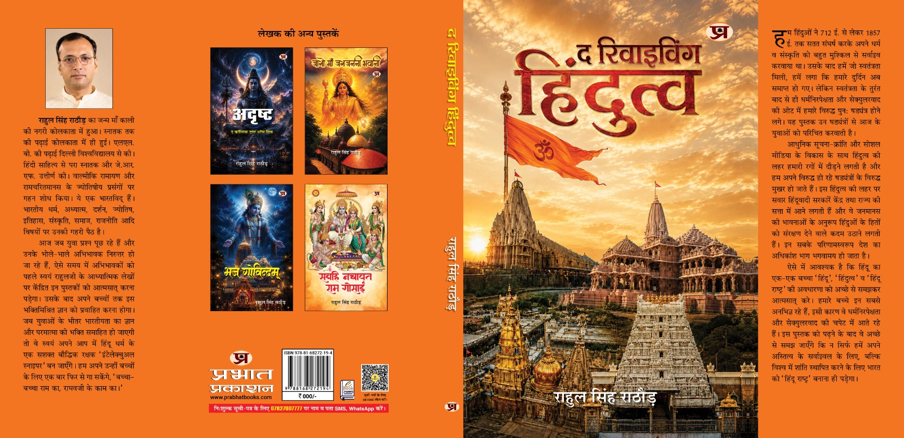
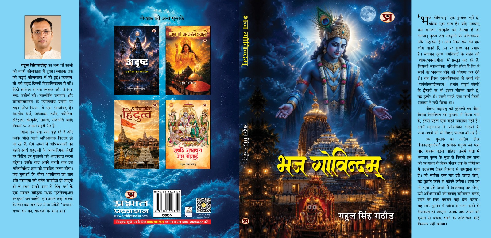
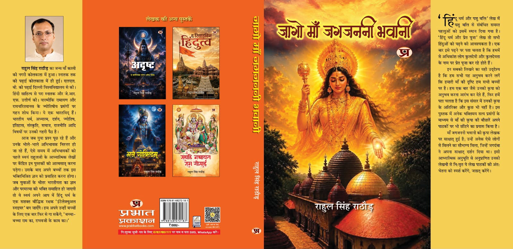
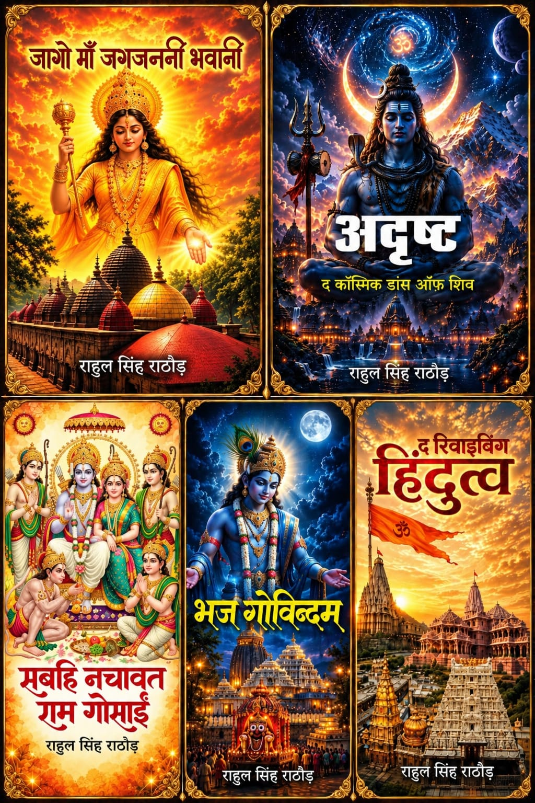

उद्देश्य : हिन्दू जनमानस को अपने धर्म, अध्यात्म, दर्शन व संस्कृति की गहरी समझ विकसित करने के साथ ही ईश्वर पर उनके भरोसे को और दृढ़ करना है।
वाल्मीकि रामायण व रामचरितमानस के खगोलीय-ज्योतिषीय रहस्यों से लेकर आधुनिक युवा पीढ़ी के संशयों के शास्त्रसम्मत समाधान तक — भक्ति और विवेक का प्रामाणिक संगम।
लेखक के गहन शोध, आध्यात्मिक साधना और राष्ट्रचेतना से उद्भूत तीन प्रमुख कृतियाँ — प्रभात प्रकाशन द्वारा प्रकाशित।

पुस्तक १ · Book 1प्रभात प्रकाशन
द रिवाइविंग हिन्दुत्व
712 ई. से 1857 ई. तक के सतत संघर्ष से लेकर स्वतंत्र्योत्तर षड़यंत्रों का पर्दाफाश। स्वामी विवेकानंद के राष्ट्रीय दर्शन से अनुप्राणित होकर भारत को 'हिन्दू राष्ट्र' बनाने की वैचारिक यात्रा।
विशेष शोध: गुरुजी माधवराव सदाशिवराव गोलवलकर ও सरदार पटेल की वास्तविक कुण्डली का ऐतिहासिक विश्लेषण।

पुस्तक २ · Book 2प्रभात प्रकाशन
भज गोविन्दम्
यदि भगवान राम संस्कृति की आत्मा हैं, तो श्रीकृष्ण उसके उद्धारक हैं। कलियुग में भी गोविन्द द्वारा भक्तों को साक्षात दर्शन देने के सत्य संस्मरण और चैतन्य महाप्रभु की कुण्डली का विश्लेषण।
अंतिम लेख 'जितसङ्गदोषा': गीता के इस शब्द की सूक्ष्म व्याख्या, जो युवा पीढ़ी को कुसंग से बचाकर चरित्रवान बनाती है।

पुस्तक ३ · Book 3प्रभात प्रकाशन
जागो माँ जगजननी भवानी
लेखक पर जगदम्बा की साक्षात कृपा, माँ बगलामुखी, कामाख्या व काली के अलौकिक अनुभव। ज्ञानगंज के चमत्कारी योगी योगिराज विशुद्धानन्द जी के दुर्लभ प्रसंग एवं कुलदेवी/प्रेत पूजा का भ्रम निवारण।
मुख्य दृष्टि: यह अनुभव करना कि जगदम्बा की करुणामयी दृष्टि अपने प्रत्येक बालक पर निरंतर विद्यमान है।
राहुल सिंह राठौड़ (लेखक एवं साधक)
राहुल सिंह राठौड़
भारतविद्, साधक एवं लेखक
जन्मस्थान:कोलकाता (माँ काली की नगरी)
उच्च शिक्षा:दिल्ली विश्वविद्यालय (विधि स्नातक / LLB)
साहित्य:हिन्दी साहित्य स्नातकोत्तर एवं JRF उत्तीर्ण
विशिष्ट शोध:वाल्मीकि रामायण व रामचरितमानस के ज्योतिषीय प्रसंग
प्रकाशन:प्रभात प्रकाशन द्वारा पाँचों ग्रंथ प्रकाशित
कार्यक्षेत्र:धर्म, अध्यात्म, दर्शन, ज्योतिष, इतिहास, संस्कृति एवं समाज
जीवन वृत्त एवं उद्देश्य
ईश्वरोन्मुख चेतना और धर्म-प्रचार का आजीवन व्रत
राहुल सिंह राठौड़ का जन्म माँ काली की नगरी कोलकाता में हुआ था। इनकी स्नातक तक की पढ़ाई कोलकाता में ही हुई। आगे दिल्ली विश्वविद्यालय से इन्होंने एलएलबी की पढ़ाई की। इन्होंने दिल्ली में ही हिन्दी साहित्य से परा स्नातक और जेआरएफ उत्तीर्ण की। इन्होंने वाल्मीकि रामायण और रामचरितमानस के ज्योतिषीय प्रसंगों पर शोध किया है। ये एक भारतविद् हैं। भारतीय धर्म, अध्यात्म, दर्शन, ज्योतिष, इतिहास, संस्कृति, समाज, राजनीति आदि विषयों पर इनकी गहरी पैठ है।
परन्तु, इनका ज्ञान इनके व्यक्तित्व पर हावी नहीं हो पाया, क्योंकि ये मूल रूप से आध्यात्मिक व्यक्ति रहे हैं। राहुल जी का मन बालपन से ही स्वतः ही ईश्वरोन्मुख हो गया था। जो भी व्यक्ति इनके प्रभाव में आता था, उसे अध्यात्म का रंग लग जाता था। इन्हें प्रकृति ने धर्म प्रचारक तैयार किया है। जब ये बड़े हो गयें तब भी धर्म प्रचार का कार्य सतत चलता रहा। जब सोशल मीडिया का दौर आ गया तो वहाँ भी प्रकृति ने इनसे धर्म प्रचार का ही काम करवाया। इनके आध्यात्मिक लेख पढ़कर हजारों लोग जो पहले लगभग नास्तिक हो चुके थें वे आस्तिक हो गयें। जो लोग पहले से आस्तिक थें वे लोग अपने धर्म पालन में अधिक दृढ़ हो गयें।
लोगों के आग्रह के कारण उन आध्यात्मिक लेखों को और अधिक विस्तार देते हुए पाँच पुस्तकों के रूप में संकलित किया गया है। इसका उद्देश्य हिन्दू जनमानस को अपने धर्म, अध्यात्म, दर्शन व संस्कृति की गहरी समझ विकसित करने के साथ ही ईश्वर पर उनके भरोसे को और दृढ़ करना है।
आज के अभिभावकों और युवा पीढ़ी के लिए पाथेय:
आज जब युवा प्रश्न पूछ रहे हैं और उनके भोलेभाले अभिभावक निरुत्तर हो जा रहे हैं, ऐसे समय में अभिभावकों को पहले स्वयं इन पुस्तकों को आत्मसात करना पड़ेगा। उसके बाद अपने बच्चों तक इस भक्ति मिश्रित ज्ञान को प्रवाहित करना होगा। जब युवाओं के भीतर भारतीयता का ज्ञान और परमात्मा की भक्ति समाहित हो जायेगी तो वे स्वयं अपने आप में हिन्दू धर्म के एक सशक्त बौद्धिक रक्षक ‘इंटलेक्चुअल स्नाइपर’ तैयार हो जायेंगे।
“बच्चा बच्चा राम का, राघव जी के काम का।”
समग्र रचना संसार · प्रभात प्रकाशन
पाँच मौलिक आध्यात्मिक व वैचारिक ग्रंथ
हजारों पाठकों के आग्रह पर संकलित लेखों का सांगोपांग विस्तार। प्रत्येक पुस्तक के आवरण, मुख्य अंश एवं विशेष अध्यायों का अवलोकन करें।

समस्त पाँच ग्रंथ — प्रभात प्रकाशन (Prabhat Prakashan) द्वारा सद्यः प्रकाशित
ग्रंथ १ · Book 1प्रभात प्रकाशनविषय: हिन्दुत्व, राष्ट्र दर्शन एवं 712 ई. से आज तक का संघर्ष
द रिवाइविंग हिन्दुत्व
“हम हिन्दुओं ने 712 ई. से लेकर 1857 ई. तक सतत संघर्ष करके अपने धर्म व संस्कृति को बहुत मुश्किल से सर्वाइव करवाया था। उसके बाद हमें जो स्वतंत्रता मिली, हमें लगा कि हमारे दुर्दिन अब समाप्त हो गयें। लेकिन स्वतंत्रता के तुरन्त बाद से ही धर्मनिरपेक्षता और सेक्युलरवाद की ओट में हमारे विरुद्ध पुनः षड़यंत्र होने लगा...”
मुख्य प्रतिपाद्य: स्वामी विवेकानंद, सावरकर, महर्षि अरविन्द और गुरुजी गोलवलकर के राष्ट्रीय दर्शन का प्रवाह। गुरुजी गोलवलकर एवं सरदार पटेल की वास्तविक कुण्डली का प्रथम विश्लेषण, नारदस्मृति का हिन्दू कोड बिल में योगदान एवं भारत को 'हिन्दू राष्ट्र' बनाने की अनिवार्यता।
ग्रंथ २ · Book 2प्रभात प्रकाशनविषय: श्रीकृष्ण, राधा, वैष्णव परंपरा एवं चैतन्य महाप्रभु शोध
भज गोविन्दम्
“भज गोविन्दम् एक पुस्तक नहीं है, बल्कि एक भाव है। यदि भगवान राम सनातन संस्कृति की आत्मा हैं तो भगवान कृष्ण उस संस्कृति के अभिभावक और उद्धारक हैं। भगवान कृष्ण उपनिषदों के दर्शन को 'श्रीमद्भगवद्गीता' में प्रस्तुत कर रहे हैं, जिसकी स्वाभाविक परिणति होती है कि वे स्वयं के भगवान होने की घोषणा कर देते हैं...”
मुख्य प्रतिपाद्य: 'मेरे तो गिरधर गोपाल' में लेखक के परिजनों को गोविन्द द्वारा साक्षात दर्शन के सत्य संस्मरण। चैतन्य महाप्रभु की कुण्डली का विशद विश्लेषण, पांडवों के जन्म नक्षत्र, एवं गीता के 'जितसङ्गदोषा' शब्द की सूक्ष्म व्याख्या द्वारा युवाओं के चरित्र की रक्षा।
ग्रंथ ३ · Book 3प्रभात प्रकाशनविषय: जगदम्बा की साक्षात कृपा, ज्ञानगंज एवं साधना रहस्य
जागो माँ जगजननी भवानी
“मुझ पर जगतजननी की कृपा बरसी और मैं उनकी कृपा को साक्षात अपने जीवन में देख पाया। इस पुस्तक के सबसे पहले लेख ‘मेरे गुरुदेव’ में मैंने अपने गुरु महेन्द्र पांडे जी के विषय में बताया है, जिन्हें जगदम्बा के साक्षात दर्शन होते थें। माँ बगलामुखी, माँ कामाख्या और माँ काली की रहस्यात्मक अनुभूतियाँ...”
मुख्य प्रतिपाद्य: योगिराज विशुद्धानन्द जी के चमत्कार व ज्ञानगंज (Gyan Ganj) के दुर्लभ संस्मरण। 'हिन्दू धर्म और पशु बलि' के समस्त शास्त्रीय पहलू, एवं कुलदेवी/कुलदेवता के नाम पर होने वाली प्रेत पूजा से मुक्ति का स्पष्ट शास्त्रीय मार्गदर्शन।
ग्रंथ ४ · Book 4प्रभात प्रकाशनविषय: शिव का ब्रह्माण्डीय नृत्य, भारतीय ज्योतिष का मूल व कुण्डली शोध
अदृष्ट (द कॉस्मिक डांस ऑफ़ शिव)
“भारतीय दर्शन में प्राणी के द्वारा किये गये पुण्य और पाप कर्मों के समुच्चय को ही ‘अदृष्ट’ कहते हैं। हिन्दू धर्म में अदृष्ट का व्यावहारिक अर्थ- 'ईश्वर की इच्छा' है। यहाँ इसे 'शिव का ब्रह्माण्डीय नृत्य' समझाया गया है। सृष्टि के प्रत्येक सूक्ष्म व विराट घटना ईश्वर के नियंत्रण में है...”
मुख्य प्रतिपाद्य: ज्योतिष का आदिम स्रोत भारत ही रहा। महाभारत से 2002 गुजरात दंगों तक रोहिणी नक्षत्र प्रभाव। भाजपा का पुनर्जन्म, नरेन्द्र मोदी जी का पूर्वजन्म व योगी आदित्यनाथ जी की कुण्डली। काल सर्प योग अंधविश्वास से मुक्ति और वास्तविक 'नागदोष' का समाधान।
ग्रंथ ५ · Book 5प्रभात प्रकाशनविषय: वाल्मीकि रामायण कुण्डली, प्राण प्रतिष्ठा मुहूर्त एवं नारी अस्मिता
सबहि नचावत राम गोसाईं
“वाल्मीकि रामायण में उपलब्ध प्राथमिक स्रोतों के आधार पर भगवान राम, भरत, लक्ष्मण और शत्रुघ्न की कुण्डलियों का विस्तार से विश्लेषण। 'रामलला का दैवीय प्राण प्रतिष्ठा' में 22 जनवरी के मुहूर्त को अशुभ बताने वाले समस्त निराधार आरोपों का विस्तार से शास्त्रसम्मत खण्डन...”
मुख्य प्रतिपाद्य: श्रीराम के 7,000 वर्ष पूर्व के काल-निर्धारण षड़यंत्रों का खण्डन। वाल्मीकि रामायण के समस्त मुहूर्त, शकुन व स्वप्न विचार (पंचवटी, मारीच, त्रिजटा व भरत स्वप्न)। रामचरितमानस की तथाकथित विवादित चौपाइयों ('ढोल गवाँर...') का तार्किक विश्लेषण व नारी अस्मिता का संरक्षण।